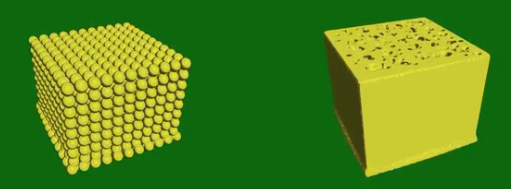
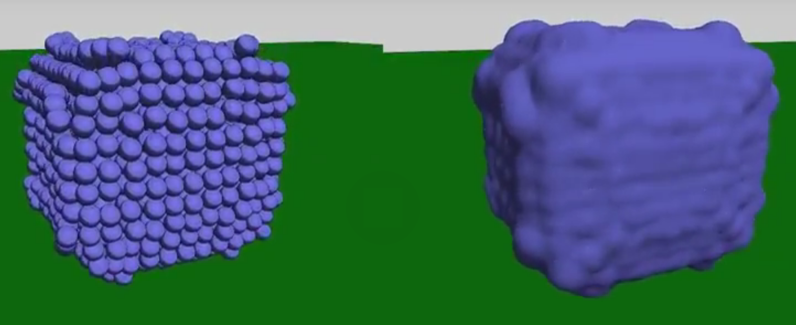

Membres du projet
- Encadrants: Pierre-Luc Manteaux
- Étudiants: Ivan Dagès, Nicolas Danet, Vincent Heurtin, Déborah Leder
- Durée: 3 semaines
Objectifs
Le but de ce projet de spécialité est de pouvoir créer des vidéos représentant des scènes où se trouvent un fluide et une éponge, qui interagissent. Il ne s'agit donc pas d'une modélisation en temps réel.
Nous avons choisi ce sujet en raison de ses applications potentielles dans des domaines tels que les effets spéciaux, les jeux vidéos, ou encore l'ingénierie.
Les objectifs sont tout d'abord d'effectuer une modélisation physique du fluide et de l'éponge, de manière indépendante puis de gérer l'intéraction entre les deux. Ensuite, nous modélisons graphiquement le fluide et l'éponge en construisant les surfaces implicites à partir de ce modèle physique.
Résultats
 